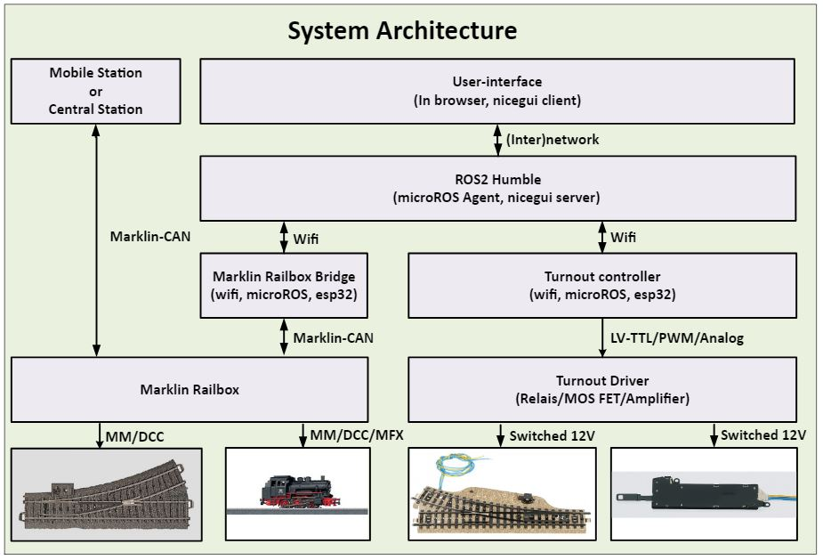

Railtrack
Modular & low-cost model RailTrack Control System
Note: This repository is currently under construcion. All code works, except documentation is not completed. It wil follow soon. Once the documentation is ready it will be possible to send issus about the system through this github repository.
Welcome to this modular model railway control system. This system makes it possible to control turnout and locomotives from a graphical user panel. The system is modular and can control both classic turnouts and digitally controlled turnouts.
This system has the following features:
Standardization through use of ROS2(Robot Operating System - Humble) as middelware system
Low-costs by using ESP32 components
Scalable to the wishes of the individual user
Easy to configure using simple json configuration files
Integratable with Marklin Central/Digital Station throug the Marklin CAN bus
Easy to adapt to “Railboxs”(Boosters) from other manufactures as Marklin
My apologies for my English language. This documentation provides a brief description of the system setup. Let the internet help you when a configuration goes wrong. Usually the answer can be found there.

Note: The “Digital Connector Box 60116”(or simular) from Marklin is called in this documentation “Railbox”